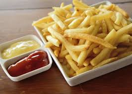

Patatas fritas
Receta de patatas fritas caseras.

Ingredientes
- 3 o 4 patatas (300g.)
- 4 dientes de ajo
- Aceite de oliva
- Sal
Elaboracion (Pasos)
- Calentar aceite en una sarten.
- Añadir las patatas cortadas, la sal y los ajos.
- Freir al gusto.
- Servir en plato.
Volver a la pagina principal